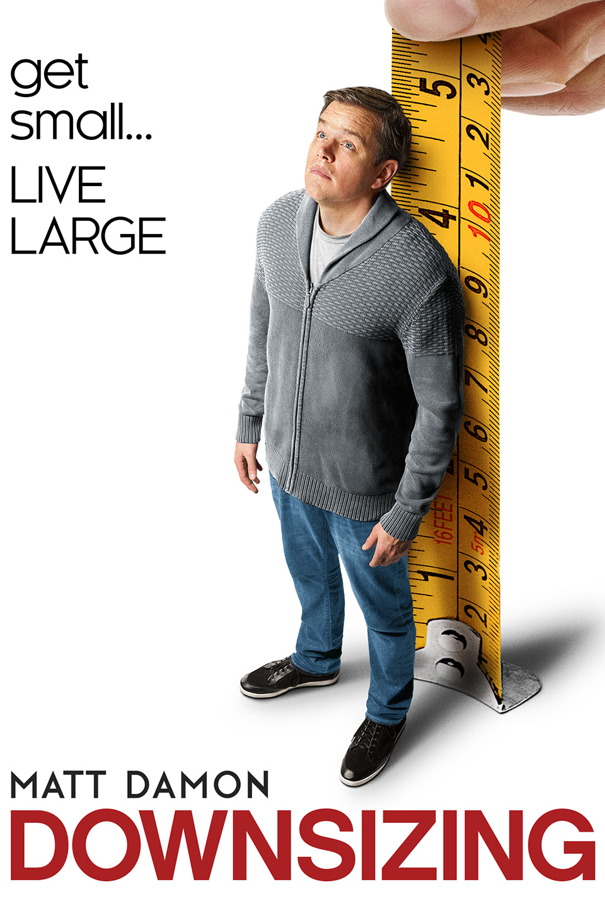
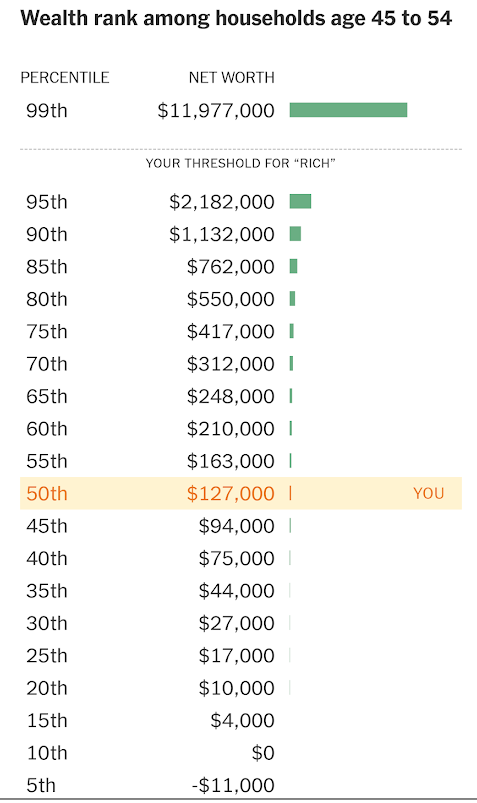
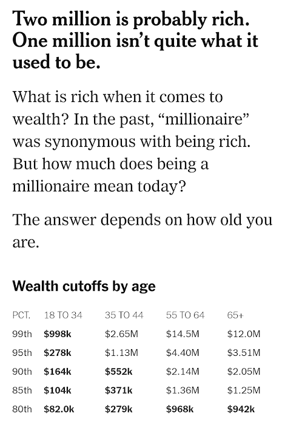
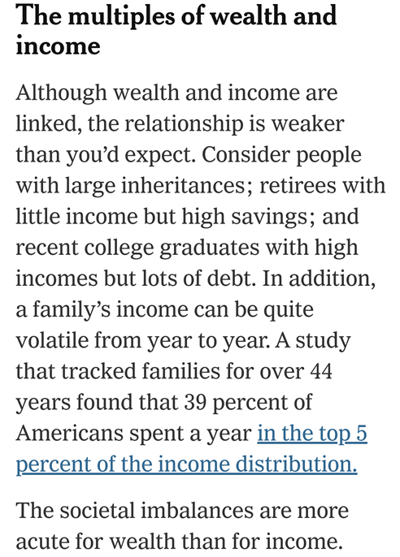
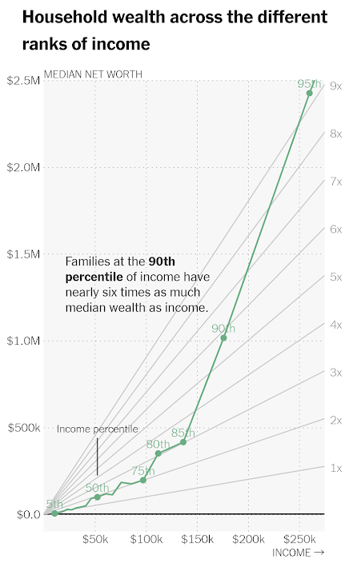
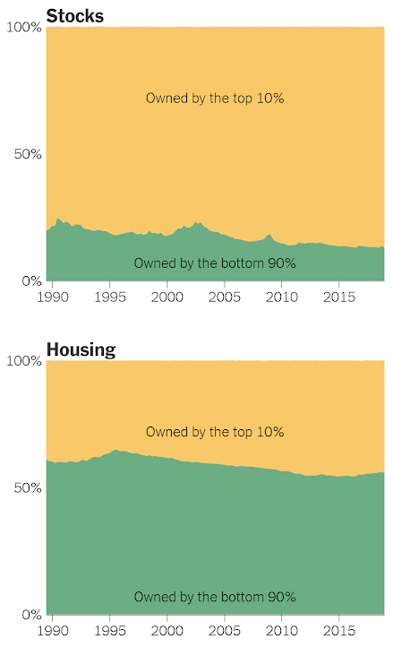

영화 "다운사이징" - 45세에 얼마를 모아둔 것이 보통인가 ?
게시: 2019-09-12T06:30:21+09:00
#써놓고 보니까 좀 걱정이 되는 부분이 있네요. '나 정도면 미국에서도 중간은 가는구나, 걱정 안 해도 되겠다'라고 생각하시는 분들이 있을지도 모르겠습니다. 걱정하셔야 합니다. 미국이나 우리나라나 딱 중간에 속하는 평범한 서민의 삶은 힘듭니다. 특히 노후에 어떻게 먹고살지 걱정되고요. 늙어서 폐지 주으러 다니지 않으려면 상위 20% 안에는 들어야겠다는 각오로 열심히 모으고 투자해야 하지 않을까 생각합니다... or die trying.
'다운사이징'(Downsizing)이라는 제목의 맷 데이먼 주연의 2017년 영화가 있습니다. 굳이 분류를 하자면 환경 보호와 빈부격차 해소 등의 메시지를 담은 블랙 코미디 영화입니다. 주된 내용은 사람을 손바닥 정도의 길이로 줄이는 신기술이 개발된 것을 배경으로, 경제적 이익 혹은 환경 보호를 목적으로 스스로 소인이 되는 사람들의 이야기입니다.

(참고로 7600만불 들여서 5500만불을 벌어들인 망작입니다.) 고달픈 중하위층 소시민의 삶에 시달리던 맷 데이먼 부부도 소인이 되면 지금 가진 것만으로도 부자처럼 살 수 있다는 말에 혹해서 소인이 되어 소인들을 위한 전용 단지 레저랜드(Leisureland)에 사는 것을 택합니다. 그를 위해 상담받는 과정 중에 저같은 자본주의적 속물 근성을 가진 사람이 매우 흥미로워 할 이야기가 나옵니다. 상담원 : 그러니까 고객분의 현재 대출금과, 퇴직 연금, 기타 저축금을 보면 현재 자본은 15만2천불(약 1억8천만원)이세요. 여러분, 아주 넉넉한 금액입니다. 폴(맷 데이먼) : 넉넉해요 ? 충분한 것과는 거리가 먼 금액 같은데요. 오드리 : 그러게요. 상담원 : 아니에요. 보세요. 표의 이 열을 보시면 돼요, 오드리. 등가 금액란이요. 여러분은 확실히 블루칩 등급에 속해요. 레저랜드에서는 여러분이 가진 15만2천불이... 평생 먹고 살기에 넉넉한 1천2백50만불(약 150억원)에 해당해요. 저는 여기서 등가 금액보다는 폴이 가졌던 원래 금액에 더 솔깃했습니다. 폴은 원래 의과전문대학원에 가려 했으나 집안 사정 때문에 진학하지 못하고 그냥 육류 가공 공장 내의 물리 치료사(occupational therapist)로 일하고 있는 사람입니다. 결코 경제적으로 넉넉하지는 않지만 그래도 멀쩡한 직업이 있는 40대의 중산층입니다. 그런데 가진 순자산이 고작 15만2천불이다 ? 저는 믿어지지 않았습니다. 그런 의아함을 가지고 있던 중, 최근에 흥미로운 기사를 봤습니다. https://www.nytimes.com/interactive/2019/08/01/upshot/are-you-rich.html 원래는 (물론 미국 기준으로) 각자 살고 있는 도시에서 자신이 부자인지 아닌지 여부를 평가해주는 설문부터 시작하는 기사였는데, 나이별로 자신이 전체 인구 중 몇%에 해당하는 지를 보여주는 그래프가 제공됩니다. 저는 저와 맷 데이먼이 공통적으로 속한 40대 후반 ~ 50대 초반의 그룹에 관심이 있었습니다. 그 결과는 아래와 같습니다.

그러니까 정말 미국의 50세 가장의 가구 기준으로 볼 때 딱 중간값에 해당하는 집안은 12만7천불(약 1억5천만원)의 순자산을 가진 것입니다. 이건 평균값이 아니라 중간값(median)입니다. 제가 생각했던 것보다 매우 적습니다. 그러니까 저 영화 속 맷 데이먼이 가진 자산 15만2천불이 딱 현실에 맞는 내용이었던 것입니다. 미국에서 (개인이 아닌) 가구 기준으로 볼 때 부자라고 불리려면 상위 몇%여야 할까요 ? 이 기사에서는 그에 대한 기준은 제시하지 않습니다. 부자라는 것이 본질적으로 상대적인 개념이기 때문입니다. 저 개인적으로는 적어도 전체 가구의 상위 5% 이상이어야 부자라고 불릴 것 같은데, 그렇게 한다면 미국에서 나이 60세의 가구가 부잣집이라고 자부하려면 약 440만불(약 53억원)이 있어야 합니다. 40세를 기준으로 한다면 훨씬 적어서, 110만불(약 14억원)이면 부자라고 자부하셔도 됩니다.

재산은 많은데 사업이든 월급이든 소득이 별로 없는 집도 있을 수 있고, 버는 것은 많지만 모아둔 재산이 별로 없는 집도 있을 수 있습니다. 당연히 미국도 그건 마찬가지인데, 어쩌면 미국은 그런 부분에서 더 역동적일 수 있습니다. 미국내 가구들을 조사한 바에 따르면 전체 미국 가구 중 무려 39%가 최소 1년간은 소득 상위 5%에 속한 경험이 있다고 합니다. 그러니까 미국 가구 중 거의 절반 정도는 한때나마 잘 나가던 때가 있었다는 이야기지요. 이건 꽤 뜻 밖이라고 느껴질 정도로 큰 비율입니다.

그래서 그 다음표가 마련되었는데, 이 표는 보기가 좀 까다롭습니다. 가로축은 연간 소득액이고, 왼쪽의 세로축은 순자산액, 오른쪽의 세로축은 연간 소득 대비 몇 배의 자산을 가지는지를 보여주는 눈금입니다. 그리고 저 초록색 곡선은 가구 연소득액의 상위%에 따른 가구 순자산액을 보여줍니다. 소득 상위 10%, 즉 아래에서부터 90%인 경우 연소득의 거의 6배에 해당하는 순자산을 보유하고 있습니다. 그러니까, 미국의 소득 상위 10% (바닥부터 90%)는 17만불(약 2억원)의 소득을 올리고, 그 6배인 100만불(약 12억원)을 축적해둔 것입니다. 미국인들이 소비지향적이라는 소리는 들었지만, 연간 2억원씩 버는 집에서 고작 12억원 밖에 안 가지고 있다니 제 생각보다는 버는 것에 비해 모아두는 것이 좀 적은 것 같네요. 그런데 소득이 내려갈 수록 모아둔 것은 기하급수적으로 줄어듭니다. 상위 20% (바닥부터 80%)만 해도 11만불(1억3천만원)을 버는데 모아둔 것은 고작 그 3배인 33만불(약 4억원)에 불과합니다.

왜 이렇게 소득 대비 자산 비율이 급격하게 차이가 날까요 ? 이 기사에 따르면 그 원인 중 하나는 '부자는 재산을 사업체와 주식으로 가지고 있지만 중간층은 주로 주택으로 가지고 있기 때문'이라고 합니다. 미국의 상위 10%는 전체 주식의 90% 정도를 소유합니다. 그러나 부동산은 전체의 고작 50% 정도만 가지고 있습니다. 아마 이 부분은 한국의 사정과는 많이 다를 것 같습니다. 우리나라에서는 사업을 하는 것보다는 그럴 돈으로 그냥 강남 아파트를 사서 가만히 쥐고 있는 것이 더 많은 돈을 벌 것 같습니다.

미국이건 한국이건 빈부격차가 심해지고 있다는 것은 큰 문제입니다. 다시 영화 '다운사이징' 이야기로 돌아가서, 이 영화에서 인상적인 대사가 있었습니다. 인간 축소술을 개발한 어떤 노르웨이 박사의 대사인데, 인간의 자원 남용과 환경 파괴 때문에 이제 인류가 멸망할 위기에 놓여있음을 한탄하며 하는 말입니다. "이 호모 사피엔스라는 생명체는 그다지 성공적인 종은 아니었군요. 그토록 지능이 높았는데도 말이에요. 고작 20만년을 버텼네요. 악어는 호두알만한 두뇌를 가지고도 2억년을 살아남았는데 말이에요. 사람들은 수천년간 세상의 종말을 예견해왔는데, 이제 그게 정말로 일어나고 있어요." (Not a very successful species, these Homo Sapiens, even with such great intelligence. Barely 200,000 years. Alligator has survived 200 million years with a brain the size of a walnut. People have been predicting the end of the world for thousands of years. And now it's really happening.) 무엇이 인간을 멸망시킬까요 ? 끊임없는 대량 생산과 대량 소비로 이어지는 현대 산업사회는 언제까지고 이어질 수는 없습니다. 대형 운석이나 태양 활동의 변화가 아니라면, 결국 인간은 돈에 대한 욕심 때문에 멸망할 것 같다는 생각이 듭니다.